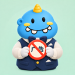

<!doctype html>
<html lang="zh-CN">
<head>
<meta charset="utf-8">
<meta name="viewport" content="width=device-width, initial-scale=1">
<title>肉呆去广告</title>
<style>
:root{
  --bg:#f5f6f8; --panel:#ffffff; --side:#eef0f4; --text:#1d1f23; --sub:#6b7280; --line:#e3e6eb;
  --accent:#2f6fec; --accent-weak:#e8effd; --ok:#1f9d55; --ok-weak:#e6f6ec; --warn:#c77700; --warn-weak:#fdf3e1;
  --bad:#d93838; --bad-weak:#fdeaea; --mono:"SF Mono",Menlo,Consolas,monospace; --log:#0f1115; --logtext:#d7dae0;
}
@media (prefers-color-scheme: dark){
  :root{--bg:#16181c; --panel:#1e2126; --side:#1a1c20; --text:#e8eaed; --sub:#9aa0a8; --line:#2c3036;
  --accent:#5b8ff9; --accent-weak:#1f2a40; --ok:#3fbf73; --ok-weak:#18301f; --warn:#e3a33b; --warn-weak:#33280f;
  --bad:#f06b6b; --bad-weak:#3a1c1c; --log:#0b0c0f;}
}
*{box-sizing:border-box}
html,body{margin:0;height:100%;background:var(--bg);color:var(--text);
  font:14px/1.6 -apple-system,BlinkMacSystemFont,"PingFang SC","Microsoft YaHei","Segoe UI",sans-serif;}
.app{display:grid;grid-template-columns:220px 1fr;height:100vh}
aside{background:var(--side);border-right:1px solid var(--line);padding:22px 14px;display:flex;flex-direction:column;gap:4px}
.brand{font-weight:700;font-size:17px;padding:0 10px 18px;display:flex;align-items:center;gap:8px}
.brand img{width:26px;height:26px;border-radius:7px}
.step{display:flex;align-items:center;gap:10px;padding:9px 10px;border-radius:8px;color:var(--sub);cursor:default}
.step b{width:22px;height:22px;border-radius:50%;border:1.5px solid var(--line);display:grid;place-items:center;font-size:12px;font-weight:600}
.step.on{background:var(--panel);color:var(--text);font-weight:600}
.step.on b{border-color:var(--accent);background:var(--accent);color:#fff}
.step.done b{border-color:var(--ok);background:var(--ok);color:#fff}
.side-foot{margin-top:auto;display:flex;flex-direction:column;gap:2px}
.link{background:none;border:0;color:var(--sub);text-align:left;padding:7px 10px;border-radius:7px;cursor:pointer;font:inherit}
.link:hover{background:var(--panel);color:var(--text)}
.ver{color:var(--sub);font-size:12px;padding:6px 10px}
.link.newver{color:var(--accent);font-weight:600;background:var(--accent-weak)}
main{overflow:auto;padding:30px 36px 40px}
h1{font-size:22px;margin:0 0 4px}
.lead{color:var(--sub);margin:0 0 22px}
.card{background:var(--panel);border:1px solid var(--line);border-radius:12px;padding:18px 20px;margin-bottom:14px}
.card h3{margin:0 0 10px;font-size:15px}
.row{display:flex;align-items:center;gap:12px;flex-wrap:wrap}
.grid{display:grid;grid-template-columns:repeat(auto-fill,minmax(220px,1fr));gap:12px}
.kv{background:var(--panel);border:1px solid var(--line);border-radius:10px;padding:12px 14px}
.kv small{color:var(--sub);display:block;font-size:12px}
.kv span{font-weight:600}
.btn{border:0;border-radius:8px;padding:9px 18px;font:inherit;font-weight:600;cursor:pointer;background:var(--accent);color:#fff}
.btn:disabled{opacity:.45;cursor:not-allowed}
.btn.ghost{background:var(--accent-weak);color:var(--accent)}
.btn.plain{background:transparent;border:1px solid var(--line);color:var(--text)}
.btn.danger{background:var(--bad)}
.actions{display:flex;gap:10px;justify-content:flex-end;margin-top:18px}
.tag{display:inline-block;padding:1px 8px;border-radius:99px;font-size:12px;font-weight:600}
.tag.ok{background:var(--ok-weak);color:var(--ok)} .tag.warn{background:var(--warn-weak);color:var(--warn)}
.tag.bad{background:var(--bad-weak);color:var(--bad)} .tag.info{background:var(--accent-weak);color:var(--accent)}
.note{border-radius:10px;padding:12px 14px;margin-bottom:14px}
.note.warn{background:var(--warn-weak);color:var(--warn)} .note.bad{background:var(--bad-weak);color:var(--bad)}
.note.info{background:var(--accent-weak);color:var(--accent)} .note.ok{background:var(--ok-weak);color:var(--ok)}
.dev{display:flex;align-items:center;gap:14px;padding:14px;border:1px solid var(--line);border-radius:10px;margin-bottom:10px;background:var(--panel)}
.dev .ico{width:38px;height:38px;border-radius:9px;background:var(--accent-weak);display:grid;place-items:center;font-size:20px}
.dev .meta{flex:1} .dev .meta small{color:var(--sub);display:block}
.tut{display:grid;grid-template-columns:repeat(auto-fill,minmax(250px,1fr));gap:14px}
.tut figure{margin:0;background:var(--panel);border:1px solid var(--line);border-radius:10px;overflow:hidden}
.tut img{width:100%;height:260px;object-fit:contain;display:block;background:#fff}
.tut figcaption{padding:8px 12px;font-size:13px}
details summary{cursor:pointer;font-weight:600}
label.chk{display:flex;align-items:flex-start;gap:10px;padding:8px 0;cursor:pointer}
label.chk input{margin-top:4px;width:16px;height:16px;accent-color:var(--accent)}
label.chk small{color:var(--sub);display:block}
.chips{display:flex;flex-wrap:wrap;gap:8px;margin-top:6px}
.chip{display:flex;align-items:center;gap:6px;border:1px solid var(--line);border-radius:99px;padding:4px 12px 4px 8px;cursor:pointer;user-select:none}
.chip input{accent-color:var(--accent)}
.chan{max-height:280px;overflow:auto;border:1px solid var(--line);border-radius:8px;margin-top:10px}
.chan table{width:100%;border-collapse:collapse;font-size:13px}
.chan td{padding:6px 10px;border-bottom:1px solid var(--line)}
.chan td.pkg{color:var(--sub);font-family:var(--mono);font-size:12px}
.chan td.appname{font-weight:500}
.chan th{position:sticky;top:0;background:var(--panel);text-align:left;font-weight:500;color:var(--sub);font-size:12px;padding:6px 10px;border-bottom:1px solid var(--line)}
.bar{height:8px;background:var(--line);border-radius:99px;overflow:hidden}
.bar i{display:block;height:100%;background:var(--accent);transition:width .3s}
.log{background:var(--log);color:var(--logtext);font-family:var(--mono);font-size:12px;border-radius:10px;padding:14px;height:340px;overflow:auto;white-space:pre-wrap;margin-top:14px}
.res{display:flex;align-items:center;gap:12px;padding:10px 0;border-bottom:1px solid var(--line)}
.res:last-child{border:0}
.res .t{flex:1;font-weight:600} .res .d{color:var(--sub);font-size:13px}
.spin{width:18px;height:18px;border:2.5px solid var(--line);border-top-color:var(--accent);border-radius:50%;animation:s 1s linear infinite;display:inline-block;vertical-align:middle}
@keyframes s{to{transform:rotate(360deg)}}
.modal{position:fixed;inset:0;background:rgba(0,0,0,.35);display:none;place-items:center;z-index:9}
.modal.show{display:grid}
.modal .box{background:var(--panel);border-radius:14px;padding:22px 24px;width:min(460px,90vw);box-shadow:0 20px 50px rgba(0,0,0,.25)}
.modal h3{margin:0 0 8px}
.hide{display:none!important}
.fb-types{display:flex;gap:8px;margin:10px 0}
.fb-types label{flex:1;border:1px solid var(--line);border-radius:10px;padding:10px;cursor:pointer;text-align:center;font-weight:600}
.fb-types input{display:none}
.fb-types label:has(input:checked){border-color:var(--accent);background:var(--accent-weak);color:var(--accent)}
textarea,input[type=text]{width:100%;border:1px solid var(--line);border-radius:10px;padding:10px 12px;font:inherit;background:var(--bg);color:var(--text);resize:vertical}
textarea.mono,input[type=text].mono{font-family:var(--mono);font-size:12px}
pre.report{background:var(--log);color:var(--logtext);font-family:var(--mono);font-size:12px;border-radius:10px;padding:14px;max-height:300px;overflow:auto;white-space:pre-wrap;word-break:break-all;margin:12px 0 0}
.modal .box.wide{width:min(640px,92vw);max-height:88vh;overflow:auto}
</style>
</head>
<body>
<div class="app">
  <aside>
    <div class="brand">肉呆去广告</div>
    <div class="step" data-s="1"><b>1</b>连接手机</div>
    <div class="step" data-s="2"><b>2</b>检测</div>
    <div class="step" data-s="3"><b>3</b>选择要关的</div>
    <div class="step" data-s="4"><b>4</b>执行</div>
    <div class="step" data-s="5"><b>5</b>完成</div>
    <div class="side-foot">
      <button class="link" onclick="openRestore()">↺ 还原改动</button>
      <button class="link" onclick="api.open_path('backups')">📁 打开备份文件夹</button>
      <button class="link" onclick="openSettings()">⚙ 设置</button>
      <button class="link" onclick="openFeedback()">💬 反馈问题</button>
      <button class="link" onclick="api.open_url('https://github.com/rddmwmddr/android-ad-cleaner')">？使用说明</button>
      <button class="link newver hide" id="newver"></button>
      <div class="ver" id="ver"></div>
    </div>
  </aside>
  <main id="main"></main>
</div>

<div class="modal" id="modal"><div class="box" id="modalbox"></div></div>

<script>
let api, ENV = {}, S = {step: 1, serial: null, dev: null, status: null, chans: null, chanNotes: [], plan: null, logNext: 0};
const $ = s => document.querySelector(s);
const esc = s => String(s ?? "").replace(/[&<>"]/g, c => ({"&":"&amp;","<":"&lt;",">":"&gt;",'"':"&quot;"}[c]));
const main = () => $("#main");

function setStep(n){
  S.step = n;
  document.querySelectorAll(".step").forEach(e => {
    const k = +e.dataset.s; e.classList.toggle("on", k === n); e.classList.toggle("done", k < n);
  });
}
function modal(html, wide){ $("#modalbox").innerHTML = html; $("#modalbox").classList.toggle("wide", !!wide); $("#modal").classList.add("show"); }
function closeModal(){ $("#modal").classList.remove("show"); }

window.addEventListener("pywebviewready", async () => {
  api = window.pywebview.api;
  ENV = await api.env();
  $("#ver").textContent = "版本 " + ENV.version;
  showConnect();
  api.latest_version().then(r => {      // 旧版不会自动更新：有新版就在侧栏提示
    if (!r || !r.version) return;
    const b = $("#newver");
    b.textContent = `有新版本 ${r.version}，点这里下载`;
    b.onclick = () => api.open_url(r.url);
    b.classList.remove("hide");
  }).catch(() => {});
});

/* ---------- 1 连接 ---------- */
const TUT = [
  ["dev-1-about.png", "① 设置 → 关于本机 → 版本信息（小米：我的设备 → 全部参数；vivo：系统管理与升级 → 版本信息）"],
  ["dev-2-version.png", "② 连点「版本号」7 次，输入锁屏密码，提示「已处于开发者模式」"],
  ["dev-3-search.png", "③ 设置顶部搜索「开发者选项」，点进去"],
  ["dev-4-on.png", "④ 确认最上方的总开关是开着的"],
  ["dev-5-usb.png", "⑤ 打开「USB 调试」。小米还要打开「USB 调试（安全设置）」"],
];
let pollDev = null;
function showConnect(){
  setStep(1); clearInterval(pollDev);
  main().innerHTML = `
    <h1>连接手机</h1>
    <p class="lead">用数据线把手机连到这台电脑。手机要打开开发者模式和 USB 调试。</p>
    <div class="note info"><b>设备支持范围</b>：支持通过 adb 连接的安卓设备。使用 HDC 的华为原生鸿蒙暂不支持；升级客户端也不会获得鸿蒙适配。荣耀 MagicOS 属于另一种情况，可先连接检测，没有本型号脚本时可自选同品牌参考脚本。</div>
    <div id="adbwarn"></div>
    <div id="adbbox"></div>
    <div id="devbox"></div>
    <details class="card" id="tutbox">
      <summary>还没打开 USB 调试？看图文教程</summary>
      <div class="tut" style="margin-top:14px">${TUT.map(([f,c]) => `<figure><figcaption>${c}</figcaption></figure>`).join("")}</div>
      <p class="lead" style="margin:14px 0 0">插线后：手机下拉通知栏，USB 用途选「传输文件」；弹出「允许 USB 调试吗？」时勾「始终允许」，点「允许」。</p>
    </details>`;
  adbWarning();
  if (!ENV.adb){ renderAdb(); return; }
  refreshDevices(); pollDev = setInterval(refreshDevices, 2000);
}
function adbWarning(){
  /* 手填的 adb 后来被挪走或卸载时，说清楚现在用的是哪一份，不要静默换掉（#311）。 */
  api.adb_info().then(i => {
    const box = $("#adbwarn");
    if (!box) return;
    const now = i.path ? `，当前用的是：${esc(i.path)}${ADB_SRC[i.source] ? `（${ADB_SRC[i.source]}）` : ""}` : "";
    box.innerHTML = i.manual_error ? `<div class="note warn">${esc(i.manual_error)}${now}</div>` : "";
  }).catch(() => {});
}
function renderAdb(){
  $("#adbbox").innerHTML = `<div class="card"><h3>第一次使用：需要 adb 工具</h3>
    <p class="lead" style="margin:0 0 12px">adb 是 Google 官方的安卓调试工具，用来和手机通信。点下面的按钮下载（约 10 MB）：先从 Google 官网下，下不了再换腾讯云镜像，下完核对文件校验值。下载即表示同意 Android SDK 平台工具的使用条款。</p>
    <div class="row"><button class="btn" id="dlbtn" onclick="dlAdb()">下载 adb</button><span id="dlmsg" class="lead" style="margin:0"></span></div>
    <div class="bar hide" id="dlbar" style="margin-top:12px"><i style="width:0"></i></div>
    <p class="lead" style="margin:14px 0 0">电脑上已经装了 adb？<a href="#" onclick="openSettings();return false" style="color:var(--accent)">手动指定它的位置</a></p></div>`;
}
async function dlAdb(){
  $("#dlbtn").disabled = true; $("#dlbar").classList.remove("hide");
  await api.download_adb();
  const t = setInterval(async () => {
    const d = await api.download_state();
    $("#dlmsg").textContent = d.msg; $("#dlbar i").style.width = d.pct + "%";
    if (d.state === "done"){ clearInterval(t); ENV = await api.env(); showConnect(); }
    if (d.state === "error"){ clearInterval(t); $("#dlbtn").disabled = false; }
  }, 400);
}
async function refreshDevices(){
  if (S.step !== 1) return;
  const r = await api.devices();
  const box = $("#devbox"); if (!box) return;
  if (r.error && r.error !== "no-adb"){ box.innerHTML = `<div class="note bad">${esc(r.error)}</div>`; return; }
  if (!r.list.length){
    if (!S.usbAt || Date.now() - S.usbAt > 8000){     // 只读设备管理器，较慢，8 秒查一次
      S.usbAt = Date.now();
      api.usb_hint().then(h => { S.usbHint = h; const el = $("#usbhint"); if (el){ el.textContent = h; el.classList.toggle("hide", !h); } });
    }
    box.innerHTML = `<div class="card"><div class="row"><span class="spin"></span><span>正在等待手机……插上数据线后这里会出现你的手机。</span></div>
      <div id="usbhint" class="note warn ${S.usbHint ? "" : "hide"}" style="margin-top:12px">${esc(S.usbHint || "")}</div>
      <p class="lead" style="margin:12px 0 0">一直没有出现：换可传数据的数据线，确认 USB 调试授权；退出电脑上的手机助手类软件和安卓模拟器。荣耀 / 华为还要打开「仅充电模式下允许 ADB 调试」；三星在 Windows 上要装三星 USB 驱动。仅支持通过 adb 连接的安卓设备，原生鸿蒙（HarmonyOS NEXT）暂不支持。</p></div>`;
    $("#tutbox").open = true; return;
  }
  S.usbHint = "";
  box.innerHTML = r.list.map(d => {
    let tag, btn = "";
    if (d.state === "device"){ tag = `<span class="tag ok">已连接</span>`; btn = `<button class="btn" onclick='pick(${JSON.stringify(d)})'>用这台</button>`; }
    else if (d.state === "unauthorized") tag = `<span class="tag warn">等待授权</span> <small>请在手机弹窗上勾「始终允许」，点「允许」</small>`;
    else tag = `<span class="tag bad">${esc(d.state)}</span> <small>重新插拔数据线</small>`;
    return `<div class="dev"><div class="ico">📱</div><div class="meta"><b>${esc(d.name || (d.brand + " " + d.model) || d.serial)}</b><small>${esc(d.model)} · ${esc(d.serial)}</small><div style="margin-top:4px">${tag}</div></div>${btn}</div>`;
  }).join("");
}
function pick(d){ clearInterval(pollDev); S.serial = d.serial; S.dev = d; S.chans = null; S.chanNotes = []; showDetect(); }

/* ---------- 2 检测 ---------- */
async function showDetect(){
  setStep(2);
  main().innerHTML = `<h1>检测</h1><p class="lead">读取这台手机的型号、系统版本和广告组件状态。只读，不改任何东西。</p>
    <div class="card"><div class="row"><span class="spin"></span>正在检测……</div></div>`;
  const serial = S.serial;
  const st = await api.status(serial);
  if (S.step !== 2 || S.serial !== serial) return;     // 等结果期间已离开检测页或换了手机：不改别人的页面（#662）
  if (st.error){ main().innerHTML += `<div class="note bad">检测失败：${esc(st.error)}</div><div class="actions"><button class="btn plain" onclick="showConnect()">返回</button></div>`; return; }
  S.status = st;
  const i = st.info, name = i.name || (i.brand + " " + i.model);
  const qa = st.quickapps, qaKeep = qa.filter(q => q.keep).length;
  const warns = [];
  if (st.locked) warns.push(`<div class="note warn">手机锁屏了。请解锁手机并保持亮屏，然后点「重新检测」。</div>`);
  if (st.input_blocked) warns.push(`<div class="note bad">电脑发出的点击被手机拒绝了。小米 / Redmi / POCO 要在「开发者选项」里再打开「USB 调试（安全设置）」（需插 SIM 卡、登录小米账号）。打开时手机会弹出风险提示，等倒计时结束点「确定」，然后点「重新检测」。<br>已经打开了还是这样：拔掉数据线重新插上再检测；还不行就重启手机再检测。不开它，自动关开关和营销通知都会失败，中途还会锁屏。</div>`);
  const foldBlock = st.fold_open && st.steps.length > 0;
  if (st.fold_open) warns.push(foldBlock
    ? `<div class="note warn">这是展开的折叠屏。展开后是左右分栏，自动关 App 开关会找错位置。请合上手机用外屏，然后点「重新检测」。</div>`
    : `<div class="note info">这是展开的折叠屏。营销通知、快应用、广告组件不受影响，可以继续。</div>`);
  main().innerHTML = `<h1>检测</h1><p class="lead">只读检测完成。</p>${warns.join("")}
    <div class="grid">
      <div class="kv"><small>手机</small><span>${esc(name)}</span></div>
      <div class="kv"><small>型号 / 系统</small><span>${esc(i.model)}</span> · ${esc(i.os || i.build)}</div>
      <div class="kv"><small>机型脚本</small>${!st.recipe ? `<span class="tag info">还没有</span>` : st.recipe_ref ? `<span class="tag info">有同品牌参考</span>` : st.recipe_ok ? `<span class="tag ok">有，版本一致</span>` : `<span class="tag warn">有，系统版本不同</span>`}</div>
      <div class="kv"><small>快应用</small>${qa.length ? `<span>${qa.length} 个组件</span> ${qa.every(q => q.closed || q.keep) ? `<span class="tag ok">已关闭${qaKeep ? `（保留 ${qaKeep} 个系统组件）` : ""}</span>` : `<span class="tag warn">开着</span>`}` : `<span>没有检测到</span>`}</div>
      <div class="kv"><small>广告组件</small>${st.ads.length ? `<span>${st.ads.length} 个</span> ${st.ads.every(a => a.suspended) ? `<span class="tag ok">已挂起</span>` : `<span class="tag warn">在运行</span>`}` : `<span>没有已知的</span>`}</div>
      <div class="kv"><small>开发者模式</small><span>开着</span></div>
    </div>
    ${st.recipe && !st.recipe_ref ? "" : `<div class="note info" style="margin-top:14px">这个型号还没有机型脚本：营销通知、快应用、广告组件可以自动处理；各 App 里的广告开关要照<a href="#" onclick="openChecklist();return false">${esc(checklistName(i.brand))}手动清单</a>关${st.recipe_ref ? `，也可以在下一步试用同品牌别的机型录的参考脚本` : ""}。</div>`}
    ${st.recipe && !st.recipe_ref && !st.recipe_ok ? `<div class="note warn" style="margin-top:14px">机型脚本是按 ${esc(st.recipe_build)} 录的，这台是 ${esc(i.os || i.build)}。会用安全模式跑：只关脚本里点名的开关，找不到入口的步骤跳过，不会乱点。</div>` : ""}
    <div class="actions"><button class="btn plain" onclick="showConnect()">换一台</button><button class="btn plain" onclick="showDetect()">重新检测</button>
    <button class="btn" ${st.locked || foldBlock || st.input_blocked ? "disabled" : ""} onclick="showChoose()">下一步</button></div>`;
}

const CHECKLIST = {OPPO: "OPPO-ColorOS.md", ONEPLUS: "OPPO-ColorOS.md", REALME: "OPPO-ColorOS.md", HONOR: "荣耀-MagicOS.md",
  XIAOMI: "小米-HyperOS.md", REDMI: "小米-HyperOS.md", POCO: "小米-HyperOS.md", VIVO: "vivo-OriginOS.md", IQOO: "vivo-OriginOS.md"};
const CHECKLIST_NAME = {"OPPO-ColorOS.md": "OPPO / ColorOS ", "荣耀-MagicOS.md": "荣耀 / MagicOS ", "小米-HyperOS.md": "小米 / HyperOS ", "vivo-OriginOS.md": "vivo / OriginOS "};
function checklistName(brand){ return CHECKLIST_NAME[CHECKLIST[(brand || "").toUpperCase()]] || ""; }
function openChecklist(){
  const f = CHECKLIST[((S.status && S.status.info.brand) || "").toUpperCase()];
  api.open_url("https://github.com/rddmwmddr/android-ad-cleaner/blob/main/docs/" + encodeURIComponent("清单") + "/" + (f ? encodeURIComponent(f) : "README.md"));
}

/* ---------- 3 选择 ---------- */
async function showChoose(){
  setStep(3);
  const st = S.status;
  const qaOn = st.quickapps.filter(q => !q.closed && !q.keep), adsOn = st.ads.filter(a => !a.suspended);
  const qaKeepNote = st.quickapps.some(q => q.keep)
    ? "快应用平台会保留（负一屏快递卡片等系统服务依赖它），广告仍可能通过 hap:// 跳进快应用"
    : "关闭后系统会拦截这类入口";
  main().innerHTML = `<h1>选择要关的</h1><p class="lead">开始前会存一份改动前的快照，每一项都能在「还原改动」里恢复。</p>
    <div class="card"><h3>各 App 里的广告开关</h3>${st.steps.length ? `
      <label class="chk"><input type="checkbox" id="c-recipe" ${st.recipe_ref ? "" : "checked"} onchange="document.querySelectorAll('.stp').forEach(x=>x.checked=this.checked)"><span>${st.recipe_ref ? `试用同品牌参考脚本（${esc(st.recipe.split("/")[1] || "")} 录制）` : "按机型脚本自动关"}<small>${st.recipe_ref || !st.recipe_ok
        ? "安全模式：只关脚本里点名的开关，不做整页全关；你的手机页面不一样的话，找不到入口的步骤会跳过。"
        : "系统广告、负一屏、搜索、商店、浏览器、主题等 App 里的推荐和广告开关。"}「防止 / 限制广告跟踪」这类保护开关会打开。</small></span></label>
      <div class="chips">${st.steps.map(s => `<label class="chip"><input type="checkbox" class="stp" value="${esc(s)}" ${st.recipe_ref ? "" : "checked"} onchange="if(this.checked)$('#c-recipe').checked=true">${esc(s)}</label>`).join("")}</div>`
      : `<p class="lead" style="margin:0">这个机型还没有机型脚本，这一项要照清单手动做。</p>`}</div>
    <div class="card"><h3>营销通知 <span id="chancount" class="tag info"></span></h3>
      <p class="lead" style="margin:0">按渠道关，同一个 App 的订单、物流、更新、聊天通知保留。服务类渠道（热点共享、红包助手、直播提醒等）默认不勾；找机位功能通知受保护，不作为营销关闭。</p>
      <div id="chanbox"><div class="row" style="margin-top:10px"><span class="spin"></span>正在扫描通知渠道……</div></div></div>
    <div class="card"><h3>快应用</h3>${qaOn.length ? `
      <label class="chk"><input type="checkbox" id="c-qa"><span>关闭快应用（${qaOn.map(q => esc(q.name)).join("、")}）
      <small>广告常用 hap:// 链接把人跳进快应用。${qaKeepNote}；vivo 优先使用快应用服务开关，其他支持的机型使用挂起。${qaOn.some(q => q.used) ? "检测到近期打开过，确认不是你主动在用。" : "请确认负一屏快递卡片等常用服务不依赖快应用。"}可还原。</small></span></label>`
      : `<p class="lead" style="margin:0">${st.quickapps.length ? "可关闭的快应用组件都已关闭。" : "没有检测到快应用组件。"}</p>`}</div>
    <div class="card"><h3>系统广告组件</h3>${adsOn.length ? adsOn.map(a => `
      <label class="chk"><input type="checkbox" class="c-ad" value="${esc(a.pkg)}"><span>挂起 <code>${esc(a.pkg)}</code><small>${adName(a.pkg)}。挂起只是暂停运行，可还原，不影响系统更新。</small></span></label>`).join("")
      : `<p class="lead" style="margin:0">${st.ads.length ? "已经挂起。" : "没有已知的广告组件。"}</p>`}</div>
    <div class="note info">执行期间请保持手机亮屏、解锁、插着线，不要碰手机。</div>
    <div class="actions"><button class="btn plain" onclick="showDetect()">上一步</button><button class="btn plain" id="ui-check" onclick="checkUi()">检查读屏连接</button><button class="btn" onclick="go()">开始执行</button></div>`;
  if (!S.chans){
    S.chanError = ""; S.chanDetail = "";
    try {
      const result = await api.chan_scan(S.serial);
      if (result.error){ S.chanError = result.error; S.chanDetail = result.detail || result.error; S.chans = []; S.chanNotes = []; }
      // 同一个软件的渠道排在一起；读不到软件名的按包名排在后面
      else { S.chans = result.chans.sort((a, b) => (!a.app - !b.app) || (a.app || a.pkg).localeCompare(b.app || b.pkg, "zh-CN") || a.name.localeCompare(b.name, "zh-CN")); S.chanNotes = result.notes || []; }
    } catch(e){ S.chanError = String(e); S.chans = []; S.chanNotes = []; }
  }
  renderChans();
}
function adName(p){
  return {"com.opos.ads":"OPPO 广告服务","com.heytap.pictorial":"OPPO 乐划锁屏（锁屏杂志）","com.miui.systemAdSolution":"小米系统广告组件。尝试挂起并禁止联网；旧系统可能不支持断网，会报告部分完成，开屏广告也可能仍出现"}[p] || "系统广告组件";
}
function renderChans(){
  const box = $("#chanbox"); if (!box) return;
  if (S.chanError){ box.innerHTML = `<div class="note bad">通知扫描未完成：${esc(S.chanError)}</div>${errorDetails(S.chanDetail || S.chanError)}<div class="actions"><button class="btn plain" onclick="S.chans=null;S.chanNotes=[];showChoose()">重新扫描</button><button class="btn plain" onclick="copyDiagnostics()">复制完整诊断</button></div>`; $("#chancount").textContent = ""; return; }
  const notes = S.chanNotes.length ? `<div class="note info">${S.chanNotes.map(n => `<div>${esc(n)}</div>`).join("")}</div>` : "";
  if (!S.chans.length){ box.innerHTML = notes + `<p class="lead" style="margin:10px 0 0">未发现已创建且开启的营销候选渠道。新设备或刚重置的设备上，App 可能尚未创建渠道，正常使用后可再次扫描。</p>`; $("#chancount").textContent = ""; return; }
  box.innerHTML = notes + `<div class="row" style="margin-top:10px"><button class="btn plain" onclick="chAll(true)">全选</button><button class="btn plain" onclick="chAll(false)">全不选</button></div>
    <div class="chan"><table><tr><th></th><th>软件</th><th>通知类别</th></tr>${S.chans.map((c, k) => `<tr><td style="width:28px"><input type="checkbox" class="ch" data-k="${k}" ${c.checked ? "checked" : ""} onchange="S.chans[${k}].checked=this.checked;chCount()"></td><td class="${c.app ? "appname" : "pkg"}" title="${esc(c.pkg)}">${esc(c.app || c.pkg)}</td><td>${esc(c.name)}</td></tr>`).join("")}</table></div>`;
  chCount();
}
function chAll(v){ S.chans.forEach(c => c.checked = v); renderChans(); }
function chCount(){ $("#chancount").textContent = `已选 ${S.chans.filter(c => c.checked).length} / ${S.chans.length}`; }
function errorDetails(detail){
  return `<details><summary>查看完整诊断</summary><pre style="white-space:pre-wrap;overflow-wrap:anywhere;max-height:240px;overflow:auto;font-size:12px">${esc(detail)}</pre></details>`;
}
async function copyDiagnostics(){
  const ok = await api.copy_text(await api.diagnostics());
  modal(`<h3>${ok ? "完整诊断已复制" : "复制失败"}</h3><p class="lead">${ok ? "可以粘贴给维护者。序列号和错误中的用户目录已替换；发送前请检查内容。" : "请点左下角「反馈问题」，展开诊断信息后手动复制。"}</p><div class="actions"><button class="btn" onclick="closeModal()">好</button></div>`);
}
async function checkUi(){
  const button = $("#ui-check");
  button.disabled = true; button.textContent = "正在检查……";
  try {
    const result = await api.ui_check(S.serial);
    modal(`<h3>${result.error ? "读屏连接未就绪" : "读屏连接正常"}</h3><p class="lead">${esc(result.error || result.message)}</p>${result.detail ? errorDetails(result.detail) : ""}<div class="actions"><button class="btn plain" onclick="closeModal()">关闭</button>${result.error ? '<button class="btn" onclick="copyDiagnostics()">复制完整诊断</button>' : ""}</div>`, true);
  } catch(e){ modal(`<h3>检查未完成</h3><p>${esc(e)}</p><button class="btn" onclick="closeModal()">关闭</button>`); }
  finally { button.disabled = false; button.textContent = "检查读屏连接"; }
}

/* ---------- 4 执行 ---------- */
let pollJob = null;
async function go(){
  const steps = [...document.querySelectorAll(".stp:checked")].map(x => x.value);
  const plan = {
    backup: true, model: S.status.info.model,
    steps: ($("#c-recipe") && $("#c-recipe").checked) ? steps : [],
    ref: !!S.status.recipe_ref,
    channels: (S.chans || []).filter(c => c.checked),
    quickapp: !!($("#c-qa") && $("#c-qa").checked),
    ads: [...document.querySelectorAll(".c-ad:checked")].map(x => x.value),
  };
  if (!plan.steps.length && !plan.channels.length && !plan.quickapp && !plan.ads.length){
    modal(`<h3>还没勾选任何一项</h3><p class="lead">勾选要关的项目后再开始。都不需要关的话，可以直接到完成页关闭开发者模式。</p>
      <div class="actions"><button class="btn plain" onclick="closeModal()">返回勾选</button><button class="btn" onclick="closeModal();showDone({sec:0,cancel:false,results:[]})">去完成页</button></div>`);
    return;
  }
  const r = await api.start(S.serial, plan);
  if (r.error){ modal(`<h3>没法开始</h3><p>${esc(r.error)}</p><div class="actions"><button class="btn" onclick="closeModal()">好</button></div>`); return; }
  S.plan = plan; S.logNext = 0; showRun();
}
function showRun(){
  setStep(4);
  main().innerHTML = `<h1>执行</h1><p class="lead">请不要碰手机。脚本在手机上点按，你一碰就会乱。需要用手机时先点「暂停」，等提示已暂停再拿起手机。</p>
    <div class="card"><div class="row" style="justify-content:space-between"><b id="jt">准备中……</b><span id="js" class="lead" style="margin:0"></span></div>
    <div class="bar" style="margin-top:10px"><i id="jb" style="width:0"></i></div>
    <div id="pausenote" class="note hide" style="margin-top:12px"></div>
    <div class="log" id="log"></div>
    <div class="actions"><button class="btn plain" id="stopbtn" onclick="api.stop()">停止</button><button class="btn plain" id="pausebtn" onclick="togglePause()">暂停</button></div></div>`;
  clearInterval(pollJob);                  // 再次进入执行页时旧定时器还在：不停掉就两个一起问（#662）
  pollSeq++;                               // 上一轮还在路上的结果作废，不要再画进这次（#676）
  polling = false;
  pollJob = setInterval(tick, 500);
}
let polling = false, pollStart = 0, pollSeq = 0;
const POLL_TIMEOUT = 10000;                // 一次 poll 超过这么久没回来就当它废了，允许重发（#676）
async function tick(){
  // 上一次还没回来就不发下一次：手机上一次常常超过半秒，两次拿同一个 logNext，同一段日志会追加两遍（#662）
  if (polling && Date.now() - pollStart < POLL_TIMEOUT) return;
  polling = true; pollStart = Date.now();
  const mine = ++pollSeq, since = S.logNext;
  let r;
  try { r = await api.poll(since); } finally { if (mine === pollSeq) polling = false; }
  if (mine !== pollSeq) return;            // 已经被后来的一次接管：这一份结果作废，免得倒着画
  if (S.step !== 4) return;                // 已经到完成页：迟到的这一次不再画
  // 只有最新那一次能写 S.logNext，所以这里拿到的永远是没画过的那一段；照旧防一手重复
  if (r.next > S.logNext){
    const log = $("#log");
    if (log && r.lines.length){ log.textContent += r.lines.join("\n") + "\n"; log.scrollTop = log.scrollHeight; }
    S.logNext = r.next;
  }
  if ($("#jt")){ $("#jt").textContent = r.title ? `第 ${r.idx} / ${r.total} 步：${r.title}` : "准备中……";
    $("#js").textContent = `已用 ${r.sec} 秒`; $("#jb").style.width = (r.total ? (r.idx - (r.running ? 0.5 : 0)) / r.total * 100 : 0) + "%"; }
  showPause(r);
  // 停在第一步时还没有结果，也要进完成页（#632），不然执行页一直停着、没有出口
  if (!r.running && r.results && (r.results.length || r.cancel)){ clearInterval(pollJob); pollJob = null; showDone(r); }
}
// 暂停在安全的位置生效：一个渠道、机型脚本的一段或一个步骤做完之后。生效前脚本还在点，不能碰手机
function showPause(r){
  const b = $("#pausebtn"), n = $("#pausenote"); if (!b || !n) return;
  S.pause = !!r.pause;
  b.textContent = S.pause ? "继续" : "暂停";
  b.disabled = !r.running || r.cancel;
  n.classList.toggle("hide", !S.pause);
  n.classList.toggle("warn", S.pause && !r.paused);
  n.classList.toggle("ok", S.pause && !!r.paused);
  n.textContent = r.paused ? "已暂停：现在可以操作手机。操作完回到桌面、保持解锁，再点「继续」。"
    : "正在暂停：等手头这一项做完（最多一两分钟），先别碰手机。";
}
async function togglePause(){
  $("#pausebtn").disabled = true;           // 0.5 秒内 tick 按后台状态刷新按钮
  if (S.pause) await api.resume(); else await api.pause();
}

/* ---------- 5 完成 ---------- */
/* 「机型脚本跑完」那行只有关掉几个，另两类结局要从 tail 里数（#758）。口径与手机版
   aac_android/view.py 的 _run_summary() 相同（那里的注释写了扣减理由与 tail 的 80 行上界）：
   tests/summary_cases.json 两边都读。 */
function runSummary(t, turnedOff){
  const parts = [`关了 ${turnedOff} 个开关`];
  let same = 0;
  for (const g of t.matchAll(/核对 (\d+) 项，调整 (\d+) 项/g)) same += Number(g[1]) - Number(g[2]);
  same -= t.split("被上级开关禁用（开关是灰的），未改动").length - 1;
  same -= (t.match(/✗ (?:关不掉|打不开) /g) || []).length;
  if (same > 0) parts.push(`${same} 项核对过无需改动`);
  const f = t.match(/未完成步骤：(.*)/);
  if (f){
    const names = f[1].split("、").map(s => s.trim()).filter(Boolean);
    if (names.length) parts.push(`${names.length} 段未完成（${names[0]}${names.length > 1 ? " 等" : ""}）`);
  }
  return parts.join("；");
}
function summarize(res){
  const t = res.tail.join("\n");
  let m;
  if ((m = t.match(/机型脚本跑完：关了 (\d+) 个，(\d+) 秒/))) return runSummary(t, Number(m[1]));
  if ((m = t.match(/拨了 (\d+) 个/))){ const left = (t.match(/仍开着: (\d+) 个/) || [])[1]; return `关了 ${m[1]} 个渠道` + (left !== undefined ? `，复查仍开着 ${left} 个` : ""); }
  if (/快应用组件已关闭/.test(t)) return `${(t.match(/已关闭$/gm) || []).length} 个组件已关闭`;
  if (/快照已存/.test(t)) return "已保存";
  if ((m = t.match(/插电常亮已改回 (\d+)/))) return `插电常亮已改回 ${m[1]}`;
  if (/插电常亮未改动/.test(t)) return "插电常亮未改动";
  return res.tail.filter(Boolean).slice(-1)[0] || "";
}
function showDone(r){
  setStep(5);
  const ok = r.results.every(x => x.rc === 0) && !r.cancel;
  const failed = r.results.some(x => x.rc !== 0 && !x.stopped);   // 点了停止不算出错，不提示上报
  const retry = r.retry || 0;      // 可重试的步数由后台按结果算好（gui/app.py 的 retryable，#638）
  if (!r.results.length){ r.results = []; }
  main().innerHTML = `<h1>${ok ? "完成" : failed ? "已结束（有步骤没成功）" : "已停止"}</h1><p class="lead">用时 ${r.sec} 秒。去下拉搜索、负一屏、应用商店、浏览器看一眼，确认功能正常。</p>
    ${retry ? `<div class="row" style="margin-bottom:14px"><button class="btn" onclick="retryRun(this)">重试没成功的步骤（${retry}）</button></div>` : ""}
    <div class="card ${r.results.length ? "" : "hide"}">${r.results.map(x => `<div class="res"><span class="tag ${x.skipped && x.rc === 0 ? "warn" : x.rc === 0 ? "ok" : x.stopped ? "warn" : "bad"}">${x.skipped ? "跳过" : x.stopped ? "已停止" : x.rc === 0 ? "成功" : "失败"}</span><span class="t">${esc(x.title)}</span><span class="d">${esc(summarize(x))} · ${x.sec} 秒</span></div>`).join("")}</div>
    ${r.recovery ? `<div class="card" id="ui-recovery"><h3>排查读屏连接</h3><p class="lead">${esc(r.recovery)}</p><div class="actions"><button class="btn plain" onclick="checkUi()">检查读屏连接</button><button class="btn plain" onclick="copyDiagnostics()">复制完整诊断</button></div></div>` : ""}
    <div class="card"><h3>最后一步：关闭开发者模式</h3>
      <p class="lead" style="margin:0 0 12px">${failed ? "有步骤未成功；若还要排查或重试，请先保留 USB 调试。结束排查后再关闭。" : "核对结果后，若不再使用电脑调试，建议关闭开发者模式和 USB 调试。"}部分银行、支付、游戏 App 检测到它开着会提醒或拒绝运行。<br>关掉<b>不会撤销</b>已经成功的改动。</p>
      <div class="row"><button class="btn" onclick="askDevOff()">帮我关闭</button><button class="btn plain" onclick="selfOff()">我在手机上自己关</button></div></div>
    ${failed ? `<div class="note bad">有步骤没成功。<a href="#" onclick="openReport();return false">上报错误日志</a>（不需要账号，发送前可以看到全部内容），或<a href="#" onclick="openFeedback('bug');return false">到 GitHub 反馈</a>。</div>` : ""}
    <details class="card"><summary>查看完整日志</summary><div class="log" style="height:260px">${esc(document.querySelector("#log")?.textContent || "")}</div></details>`;
}
/* 重试没做成的步骤（#638）：后台按失败段名重排计划，界面只是再走一次执行页。
   按下就置灰：连点两下时第二次会撞上「已有任务在运行」，那个报错会盖在已经跑起来的重试上。 */
async function retryRun(button){
  if (button) button.disabled = true;
  const r = await api.retry();
  if (r.error){
    if (button) button.disabled = false;
    modal(`<h3>没法重试</h3><p>${esc(r.error)}</p><div class="actions"><button class="btn" onclick="closeModal()">好</button></div>`);
    return;
  }
  S.logNext = 0; showRun();
}
function askDevOff(){
  modal(`<h3>关闭开发者模式？</h3><p class="lead">关闭后电脑会和手机断开，这是正常的。以后要还原改动，在手机上重新打开开发者模式即可。</p>
    <div class="actions"><button class="btn plain" onclick="closeModal()">取消</button><button class="btn" onclick="devOff()">关闭</button></div>`);
}
async function devOff(){
  closeModal(); await api.dev_off(S.serial);
  modal(`<h3>已关闭</h3><p class="lead">请在手机上打开 设置 → 搜索「开发者选项」，确认总开关是关着的。</p><div class="actions"><button class="btn" onclick="closeModal();showConnect()">好</button></div>`);
}
function selfOff(){
  modal(`<h3>在手机上关闭</h3><p class="lead">设置 → 顶部搜索「开发者选项」→ 关掉页面最上方的总开关。</p><div class="actions"><button class="btn" onclick="closeModal()">好</button></div>`);
}

/* ---------- 反馈 ---------- */
const REPO = "https://github.com/rddmwmddr/android-ad-cleaner";
const FB = {bug: ["遇到问题", "bug_report.md", "[问题] "], idea: ["功能建议", "feature_request.md", "[建议] "], device: ["适配新机型", "new_device.md", "[新机型] "]};
async function openFeedback(type){
  type = type || "bug";
  const diag = await api.diagnostics();
  modal(`<h3>反馈问题</h3>
    <p class="lead" style="margin:0">提交后会打开 GitHub 的新建 Issue 页面，内容已经填好。需要登录 GitHub 账号（免费注册）。</p>
    <div class="fb-types">${Object.entries(FB).map(([k, v]) => `<label><input type="radio" name="fbt" value="${k}" ${k === type ? "checked" : ""}>${v[0]}</label>`).join("")}</div>
    <textarea id="fbtext" rows="4" placeholder="发生了什么？你希望怎样？
比如：执行到「关闭营销通知」时卡住了；或者：希望支持 vivo X200。"></textarea>
    <label class="chk"><input type="checkbox" id="fbdiag" checked><span>附带诊断信息<small>客户端版本、电脑系统、手机型号和系统版本、执行结果和最近的日志；adb 读到 0 台时还有 USB 设备名、硬件 ID 与调试接口登记的 GUID。手机序列号已替换掉，不含应用列表和通知内容。可以在下面修改。</small></span></label>
    <details><summary>查看 / 修改诊断信息</summary><textarea id="fbdiagtext" class="mono" rows="6" style="margin-top:8px">${esc(diag)}</textarea></details>
    <div id="fbmsg" class="note info hide" style="margin-top:12px"></div>
    <div class="actions"><button class="btn plain" onclick="openReport()">没有 GitHub 账号：上报错误日志</button><button class="btn plain" onclick="closeModal()">取消</button><button class="btn" onclick="sendFeedback()">提交到 GitHub</button></div>`, true);
}

/* ---------- 错误日志上报：先预览全部内容，确认后发送 ---------- */
async function openReport(){
  S.report = await api.report_payload();
  if (!S.report.steps.length && !S.report.log.trim()){   // 没执行过：只有手机型号，看不出问题（10-28 六份空报告）
    modal(`<h3>上报错误日志</h3><p class="lead">还没有执行记录，这份报告只有手机型号，看不出问题。请先执行一次再上报。</p>
      <p class="lead" style="margin:0">还没执行就遇到问题（连不上手机、检测不出机型、扫描不出通知），请到 GitHub 反馈，写清楚卡在哪一步。</p>
      <div class="actions"><button class="btn plain" onclick="closeModal()">关闭</button><button class="btn" onclick="openFeedback('bug')">到 GitHub 反馈</button></div>`);
    return;
  }
  modal(`<h3>上报错误日志</h3>
    <p class="lead" style="margin:0">发送到项目服务器 supabase.ahuamiao.com，用来定位问题。下面是要发送的全部内容：手机序列号、电脑用户名、邮箱、手机号、IP 已替换，不含应用列表、通知内容和账号信息。服务器保存 90 天，IP 只存不可还原的哈希。</p>
    <pre class="report">${esc(JSON.stringify(S.report, null, 2))}</pre>
    <div id="rpmsg" class="note hide" style="margin-top:12px"></div>
    <div class="actions"><button class="btn plain" onclick="closeModal()">取消</button><button class="btn" id="rpbtn" onclick="sendReport()">确认上报</button></div>`, true);
}
async function sendReport(){
  const b = $("#rpbtn"), m = $("#rpmsg");
  b.disabled = true; b.textContent = "上报中…";
  const r = await api.send_report(S.report);
  m.classList.remove("hide", "ok", "bad");
  if (r.ok){
    m.classList.add("ok");
    m.textContent = r.duplicate ? "这份日志一小时内上报过，不用重复发送。" : `上报成功。报告编号 ${r.id}；需要删除这份记录时，在 GitHub 提 Issue 附上编号。`;
    b.textContent = "已上报";
  } else {
    m.classList.add("bad"); m.textContent = r.error; b.disabled = false; b.textContent = "重试";
  }
}
async function sendFeedback(){
  const type = (document.querySelector("input[name=fbt]:checked") || {}).value || "bug";
  const text = $("#fbtext").value.trim();
  if (!text){ $("#fbtext").focus(); $("#fbtext").placeholder = "请先写一句发生了什么"; return; }
  const diag = $("#fbdiag").checked ? $("#fbdiagtext").value : "";
  const [, tpl, prefix] = FB[type];
  const title = prefix + text.split("\n")[0].slice(0, 60);
  let body = `## 描述\n\n${text}\n` + (diag ? `\n## 诊断信息\n\n${diag}\n` : "");
  const base = `${REPO}/issues/new?template=${tpl}&title=${encodeURIComponent(title)}&body=`;
  let url = base + encodeURIComponent(body);
  const msg = $("#fbmsg");
  if (url.length > 7500){      // 网址太长浏览器会截断：完整内容放剪贴板，网址里留摘要
    await api.copy_text(body);
    // 以前网址里只有一句「请粘贴」，很多反馈没粘贴，只剩标题。现在先放手机、系统、各步结果和日志末尾。
    const head = diag.split("<details>")[0].trim();
    const tail = (diag.match(/```text\n([\s\S]*?)\n```/) || ["", ""])[1].split("\n").filter(l => l.trim());
    const brief = n => `## 描述\n\n${text}\n\n## 诊断信息\n\n${head}\n\n最近的日志（节选）：\n\n\`\`\`text\n${tail.slice(-n).join("\n")}\n\`\`\`\n\n（完整诊断已复制到剪贴板，可以粘贴在这里）\n`;
    let n = 40;
    url = base + encodeURIComponent(brief(n));
    while (url.length > 7500 && n > 0){ n -= 5; url = base + encodeURIComponent(brief(n)); }
    if (url.length > 7500) url = base + encodeURIComponent(`## 描述\n\n${text}\n\n## 诊断信息\n\n（内容较长，已复制到剪贴板，请在这里粘贴）\n`);
    msg.textContent = "已在网址里带上诊断摘要，完整诊断复制到了剪贴板。打开的页面里，可以在末尾粘贴完整内容。";
  } else {
    msg.textContent = "已在浏览器里打开 GitHub。登录后检查一下内容，点「Submit new issue」提交。";
  }
  msg.classList.remove("hide");
  api.open_url(url);
}

/* ---------- 还原 ---------- */
function openRestore(){
  if (!S.serial){ modal(`<h3>先连接手机</h3><p class="lead">还原要连着手机操作。请先在「连接手机」里选中要还原的手机。</p><div class="actions"><button class="btn" onclick="closeModal()">好</button></div>`); return; }
  modal(`<h3>还原改动</h3><p class="lead">选一项恢复。App 内的开关要按清单路径手动打开。</p>
    <div style="display:flex;flex-direction:column;gap:10px;margin:14px 0">
      <button class="btn ghost" onclick="restore('quickapp')">恢复快应用</button>
      <button class="btn ghost" onclick="restore('suspend')">恢复挂起的广告组件</button>
      <button class="btn ghost" onclick="restore('channels')">重新打开关掉的营销通知</button></div>
    <div id="rmsg" class="lead" style="white-space:pre-wrap;font-size:12px"></div>
    <div class="actions"><button class="btn plain" onclick="closeModal()">关闭</button></div>`);
}
async function restore(w){ $("#rmsg").textContent = "处理中……"; $("#rmsg").textContent = await api.restore(S.serial, w); }

/* ---------- 设置：手动指定 adb（#311） ---------- */
const ADB_SRC = {manual: "手动指定", downloaded: "客户端下载", system: "系统已安装", none: ""};
async function openSettings(){
  modal(`<h3>设置</h3>
    <p class="lead" style="margin:0 0 12px">自动找不到 adb 时（自己装在别的目录、公司电脑不让下载），在这里指定 adb 的完整路径。指定后会优先用它。</p>
    <div id="adbcur"></div>
    <label class="lead" for="adbpath" style="display:block;margin:0 0 6px">adb 路径</label>
    <div class="row"><input type="text" id="adbpath" class="mono" placeholder="例如 /Users/你/Software/AndroidSDK/platform-tools/adb"><button class="btn ghost" onclick="browseAdb()">浏览…</button></div>
    <div id="adbmsg" class="note hide" style="margin-top:12px"></div>
    <div class="actions"><button class="btn plain" onclick="clearAdb()">恢复自动查找</button><button class="btn plain" onclick="closeModal()">关闭</button><button class="btn" onclick="saveAdb()">保存</button></div>`);
  renderAdbInfo(await api.adb_info());
}
function renderAdbInfo(info){
  const where = info.path ? `${esc(info.path)}${info.version ? `（版本 ${esc(info.version)}）` : ""}` : "还没有找到 adb";
  const src = ADB_SRC[info.source] ? `，来源：${ADB_SRC[info.source]}` : "";
  const cur = $("#adbcur");
  if (cur) cur.innerHTML = `<div class="note ${info.manual_error ? "warn" : "info"}">当前使用：${where}${src}${info.manual_error ? `<br>${esc(info.manual_error)}` : ""}</div>`;
  const box = $("#adbpath");
  if (box && !box.value) box.value = info.manual || "";
}
function adbMessage(text, kind){
  const el = $("#adbmsg");
  if (!el) return;
  el.className = "note " + kind;
  el.textContent = text;
}
async function saveAdb(){
  const r = await api.set_adb_path($("#adbpath").value);
  if (!r.ok){ adbMessage(r.error, "bad"); return; }
  adbMessage(`已保存：${r.path}（版本 ${r.version || "未知"}）${r.running ? "。正在执行，本步骤结束后生效" : ""}`, "ok");
  renderAdbInfo(r);
  ENV = await api.env();
  if (S.step === 1) showConnect();
}
async function browseAdb(){
  const picked = await api.pick_adb_file();
  if (picked) $("#adbpath").value = picked;
}
async function clearAdb(){
  $("#adbpath").value = "";
  const info = await api.clear_adb_path();
  renderAdbInfo(info);
  adbMessage(info.path ? "已恢复自动查找。" : "已恢复自动查找，但电脑上还是没找到 adb，请下载或指定路径。", info.path ? "ok" : "warn");
  ENV = await api.env();
  if (S.step === 1) showConnect();
}
</script>
</body>
</html>
